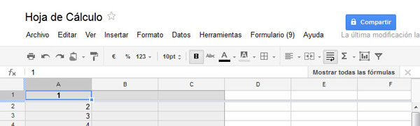

Presta atención a lo que podemos hacer con Hojas de cálculo.
- Una hoja de cálculo es una aplicación que nos permite realizar cálculos con números dispuestos en forma de tabla.
- La tabla está compuesta por celdas (organizadas en una matriz de filas y columnas). La celda es la unidad básica de información en la hoja de cálculo, donde se insertan los valores y las fórmulas que realizan los cálculos.
- Es posible realizar cálculos complejos con fórmulas y funciones y dibujar distintos tipos de gráficas.
- Podremos crear, editar y subir archivos de hojas de cálculo desde cualquier lugar con acceso a Internet y guardarlos online de forma segura.
Además de esto, tenemos la posibilidad de invitar a otros usuarios a ver y trabajar en nuestras hojas de cálculo y modificarlos juntos, simultáneamente y en tiempo real.
